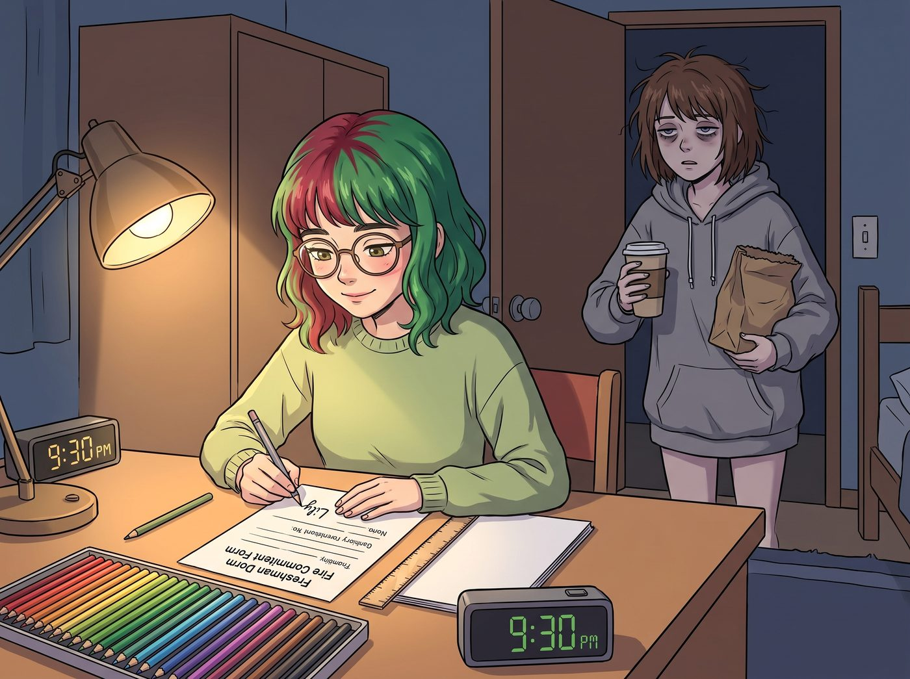

死豬不怕滾水燙（倒敘）

時鐘撥回2017年的波特蘭，太平洋西北藝術學院的ArtHouse新生宿舍。
那時的Lily，還只是一個剛滿十八歲、穿著洗得發白的米色針織衫、對學生手冊倒背如流、聽到火災警報測試都會嚇得立正站好的究極乖乖牌。
一、深夜的求救
星期四晚上九點半。Lily宿舍的書桌上，色鉛筆按照光譜順序排列得一絲不苟，筆記本邊緣甚至用直尺對齊了桌子的直角。她正戴著圓框眼鏡，對著一份大一新生宿舍消防安全承諾書認真地簽下自己的名字，字跡工整得像印刷體。
就在這時，門被虛掩的縫隙裡，擠進來一個像喪屍一樣搖搖晃晃的身影。
Max穿著一件大出兩個size的灰色連帽衫，頭髮亂得像個鳥巢，眼底下掛著足以申報非物質文化遺產的黑眼圈。她手裡端著一杯已經涼掉的黑咖啡，腋下夾著一個裝滿廢棄寶麗來底片的牛皮紙袋。
「Lily……救命……」Max虛弱地靠在門框上，彷彿下一秒就要原地超渡，「我高年級工作室的掃描器被一個雕塑系的瘋子塞滿了石膏。借妳的印表機掃描一下我的畢業設計草圖，拜託了。作為交換，我給妳帶了巫毒甜甜圈。」
Max從連帽衫的巨大口袋裡，掏出一個被擠壓得有些變形的、撒滿粉紅色糖霜的甜甜圈。
「Max學姐！」Lily像隻受驚的小兔子一樣從椅子上彈了起來，雙手緊張地在胸前絞著，「可是……可是宿舍管理條例規定，晚上九點以後，非本樓層住宿人員不得在新生區逗留！而且……而且那個甜甜圈的糖霜掉在地毯上，會引發一級衛生警告的！」
「放輕鬆，小學妹。規矩是死的，死線是活的。」Max熟練地癱倒在Lily宿舍唯一的一張懶骨頭沙發上，發出一聲舒服的呻吟，「再說了，誰會大半夜來查房……」
二、公權力的降臨
「叩叩叩！開門！我已經看到妳們了！」
一聲猶如晴天霹靂的怒吼在走廊響起。PNCA新生宿舍最令人聞風喪膽的存在——宿管大媽Brenda，像一台重型坦克一樣推開了門。她胸前掛著哨子，手裡拿著那本象徵著絕對權力的新生扣分登記冊。
Lily嚇得差點把手裡的筆吞下去。2017年的她，大腦裡還沒有安裝任何合規豁免的軟體。面對公權力，她的第一反應是純粹的恐懼。
「Brenda女士！對……對不起！」Lily鞠了個九十度的躬，聲音都在發抖，甚至開始主動交代罪行，「Max學姐只是來借掃描器的！那個甜甜圈我絕對沒有吃！請不要給我記過，我還想申請下學期的獎學金，如果檔案裡有了衛生和違規探視的污點，我的學術生涯就全毀了！」
看著這個瑟瑟發抖、主動承認一切的乖巧大一新生，Brenda滿意地冷笑了一聲。她最喜歡的就是欺負這種對規則充滿敬畏的菜鳥。
「太遲了，Lily！妳們嚴重違反了夜間管理條例！」Brenda掏出紅筆，氣焰囂張地指著癱在沙發上的Max，「還有妳！妳是幾年級的？哪個系的？把妳的學生證拿出來！」
Lily絕望地閉上了眼睛，覺得自己和Max的人生都要在這裡畫上句號了。
三、大四鹹魚的絕對防禦
然而，沙發上的Max沒有動。她甚至連眼皮都沒有抬一下，只是像一條在沙灘上暴曬了三天的鹹魚，緩緩地、艱難地吸了一口手裡那杯冷掉的黑咖啡。
「Brenda，」Max的聲音沙啞、微弱，透著一種看破紅塵的極致空洞，「我是大四攝影系的Max Caulfield。」
「大四又怎麼樣？大四就能無視規矩嗎？！」Brenda怒吼道。
「不，妳誤會了。」Max終於抬起頭，那雙因為熬夜趕畢業展而充滿紅血絲的眼睛，死死地盯著Brenda。那眼神裡沒有反抗，沒有憤怒，只有一種令人毛骨悚然的絕對死寂。
「我的意思是，我是一個還有三個星期就要交畢業作品，但我現在連主題都還沒定下來的大四學生。我的學生貸款高達十二萬美金；我已經連續四十八小時沒有躺在有床單的平面上睡覺了；我的血液裡現在流淌著百分之九十的濃縮咖啡和百分之十的存在主義焦慮；而我剛才在走過來的時候，甚至在認真思考，如果我現在從二樓的樓梯上滾下去，摔斷一條腿，是不是就能合法向學院申請延期畢業。」
Max放下咖啡杯，雙手攤開，擺出一個任人宰割的姿勢：
「所以，Brenda，妳想記過？請便。妳想給我的系主任打電話？太好了，請順便告訴他我明天早上的概念藝術史課去不了了。妳想把我趕出宿舍？求之不得，走廊的長椅比我工作室那張沾滿顯影液的破椅子軟多了。妳如果現在要處罰我，對我來說不是懲罰，而是一種解脫。」
說完，Max像一灘爛泥一樣重新滑進了懶骨頭沙發裡，閉上眼睛：「動手吧，Brenda。把一條已經死透的鹹魚再殺一次。」
四、崩潰的公權力
整個宿舍陷入了死一般的寂靜。
宿管大媽Brenda拿著紅筆的手僵在了半空。她處理過無數個在宿舍裡偷偷喝酒的叛逆新生，也鎮壓過無數次大二學生的午夜派對。但她這輩子，從來沒有面對過這種物理防禦無限大、精神血量已清零的究極大四鹹魚。
大四學生的怨氣和求死欲，形成了一道肉眼可見的防護罩。Brenda突然意識到，對一個已經一無所有、只求一死的大四藝術生進行記過威脅，就像是用滋水槍去威脅一個正在火山口泡溫泉的人。
「妳……妳們這些搞藝術的瘋子……」Brenda嚥了一口唾沫，氣勢瞬間垮了下來。她嫌棄地看了Max一眼，彷彿害怕那種延畢的焦慮會通過空氣傳染給她一樣，趕緊把扣分登記冊塞回腋下。
「下不為例！掃描完立刻讓她滾蛋！」Brenda留下這句毫無殺傷力的場面話，砰地一聲關上門，落荒而逃。
五、第一次的啟蒙
危機解除了。
Lily依然保持著九十度鞠躬的姿勢，過了好幾秒才敢抬起頭。她震驚地看著沙發上那坨名為Max的生物，圓框眼鏡後面的眼睛裡充滿了不可思議的光芒。
在2017年的Lily看來，剛才發生的事情簡直是神蹟。沒有引用法規，沒有填寫表格，只是說了幾句自暴自棄的話，就讓那個不可一世的宿管大媽退縮了！
「Max學姐……」Lily走到沙發旁，語氣中帶著一種近乎朝聖般的崇拜，「妳剛才那是……某種高級的行政豁免權嗎？妳是怎麼精準地判斷出她無法對妳的沉沒成本造成二次傷害的？」
「什麼行政豁免權？」Max閉著眼睛，虛弱地嘟囔著，「那叫死豬不怕滾水燙。Lily，記住，當妳爛到一定境界的時候，這個世界上就沒有任何規則能約束妳了。」
這句話，猶如一顆種子，落進了十八歲乖乖牌Lily的大腦裡。
Lily認真地拿出她那個排版完美的筆記本，用工整的字體記下了這段話。雖然當時的她還沒完全理解底線防禦的真諦，但她看著Max，輕聲問道：
「所以，只要能證明自己已經處於系統的邊緣，系統就會自動放棄對妳的監管？這在社會學上是不是可以轉化為一種……逆向的合規操作？」
Max根本沒聽懂這個大一新生的學術發言，她已經發出了輕微的鼾聲，手裡還緊緊攥著那個被壓扁的巫毒甜甜圈。
而站在一旁的Lily，推了推那副象徵著純良的圓框眼鏡。雖然她現在還只會害怕宿管大媽，但看著沙發上那條無敵的大四鹹魚，這位未來的行政黑魔法師，終於在波特蘭的雨夜裡，完成了她人生中第一次關於利用規則漏洞的啟蒙。